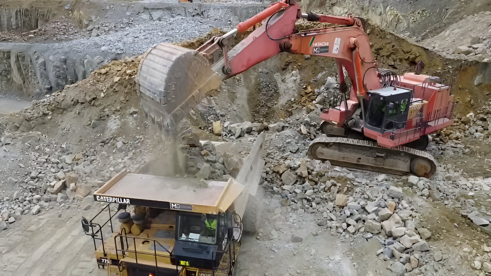
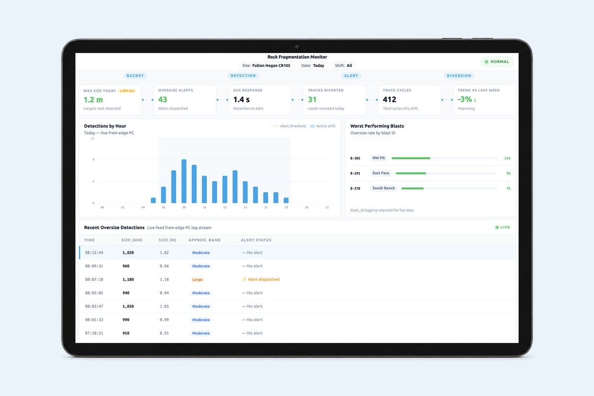
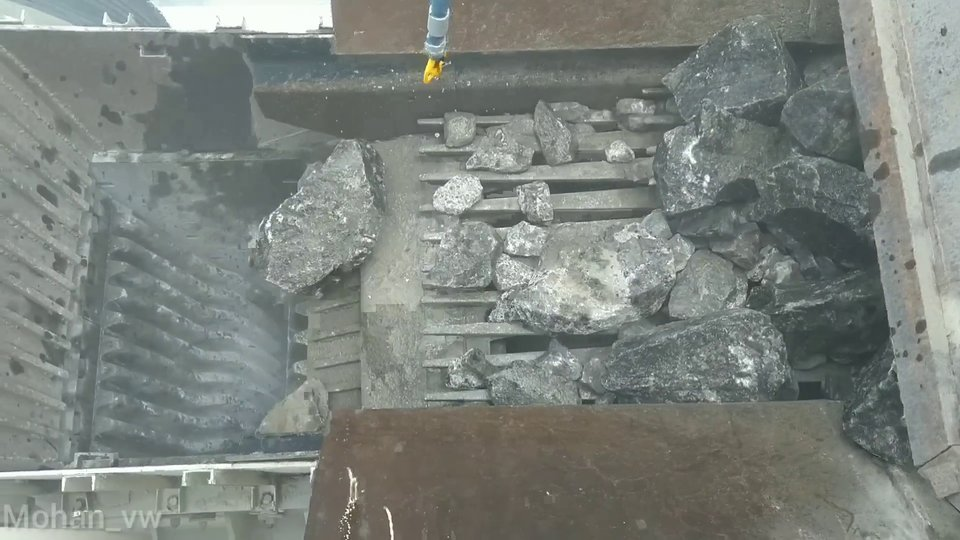
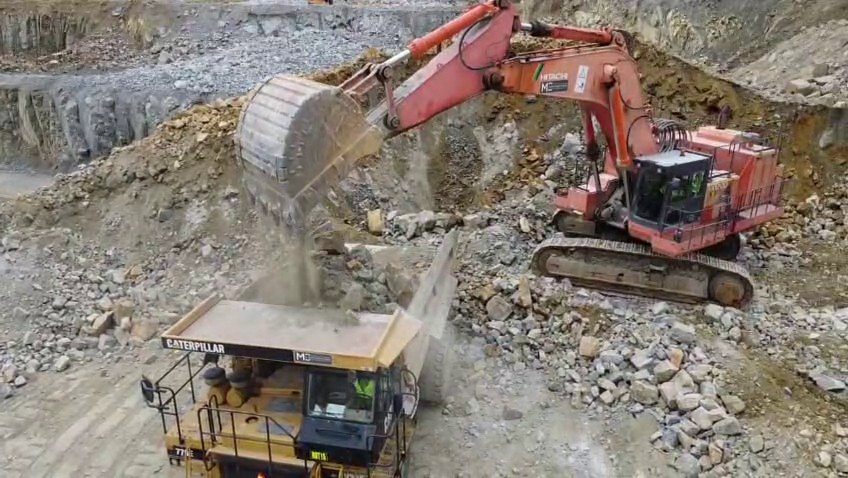
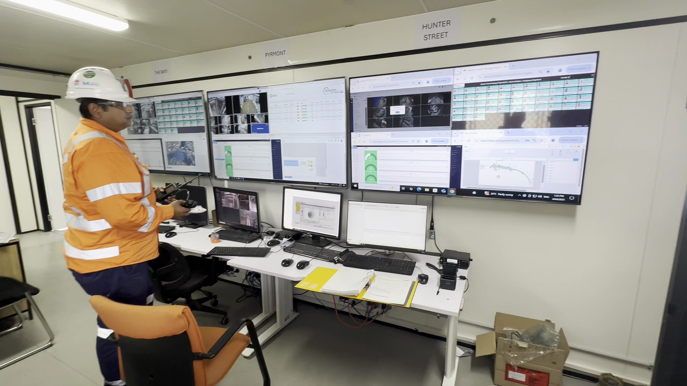

Production Intelligence
Accelerate Production & Increase Throughput
Understand how blast design influences loading efficiency, haulage performance, crusher throughput and production outcomes across your entire operation.
Every blast influence the rest of the production cycle. iottag continuously measures fragmentation quality, tracks downstream performance and provides the operational intelligence needed to optimise future blasts, reduce bottlenecks and increase throughput.
Optimise Loading Performance
Loading performance begins with fragmentation quality
Well-fragmented material is easier to dig, faster to load and more consistent to move throughout the operation.
iottag helps organisations understand how fragmentation influences diggability, bucket fill efficiency, loading cycle times, excavator productivity, material movement and tonnes loaded per hour, enabling continuous improvements in loading performance and overall production efficiency.
Every Blast Affects
Production Output
Close The Loop Between Production And Blast Design, iottag connects fragmentation outcomes with downstream production performance, enabling engineering teams to understand how blast design influences loading, hauling, crushing and throughput.
This creates a continuous improvement cycle where every blast provides intelligence that improves the next.
Poor fragmentation doesn't stop at the blast.
It affects every machine, every operator and every tonne moved throughout the operation.
Understand Fragmentation
In Real Time

Increase Haulage & Reduce Crusher Downtime
Instead of simply reporting oversize after it arrives at the crusher, iottag identifies oversized material before it impacts production.

The Platform Helps Operations
Production Intelligence Dashboards
Different dashboards for different users.
Machine Operators
Fragmentation map
Oversize alerts
Truck routing
Active production

Supervisors
Crusher utilisation
Queue times
Loading performance
Shift KPIs
Production delays
Site Management
Tonnes per hour
Cost per tonne
Blast comparison
Diggability trends
Equipment productivity
Corporate
Multi-site benchmarking
Quarry benchmarking
Contractor benchmarking
Blast design performance
Production benchmarking
Executive KPIs
Continuous
Production Optimisation
Production Intelligence helps organisations continuously improve:
Blast Design
Fragmentation Quality
Loading Efficiency
Haulage Performance
Crusher Throughput
Processing Performance
Equipment Utilisation
Production Output
Operational Intelligence Enabled
By combining production intelligence with workforce activity, equipment, vehicles, environmental conditions and operational data,
iottag helps organisations understand the complete factors influencing production outcomes.


Accelerate Production
Understand fragmentation, optimise blast performance and continuously improve loading efficiency, crusher throughput and production outcomes across your operation